Susanna Huang
Student of Master of Business Intelligence and Process Management
Berlin School of Economics and Law
https://www.linkedin.com/in/susannahqr/
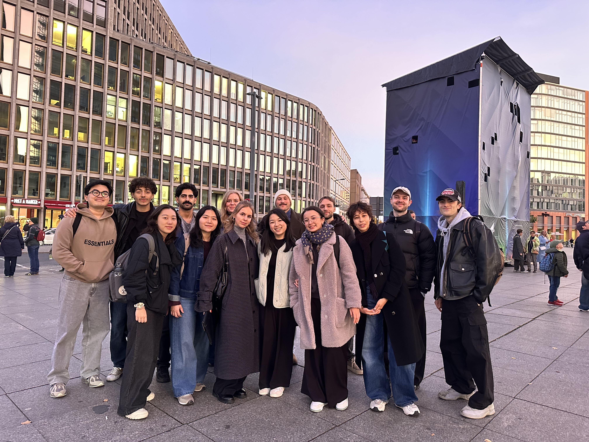Where I'm from
Born and raised in Melbourne, Australia - The Best Cafes in Melbourne
Parents from Guangzhou, China


What I like
Climbing, Yoga, Food and Cats 🐱
 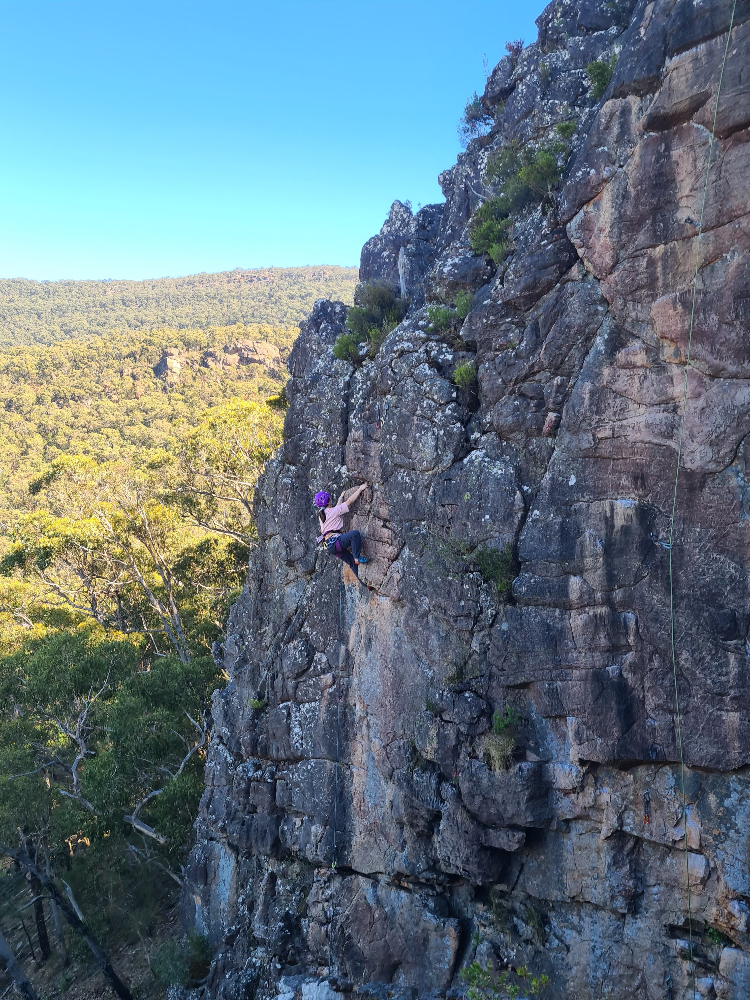
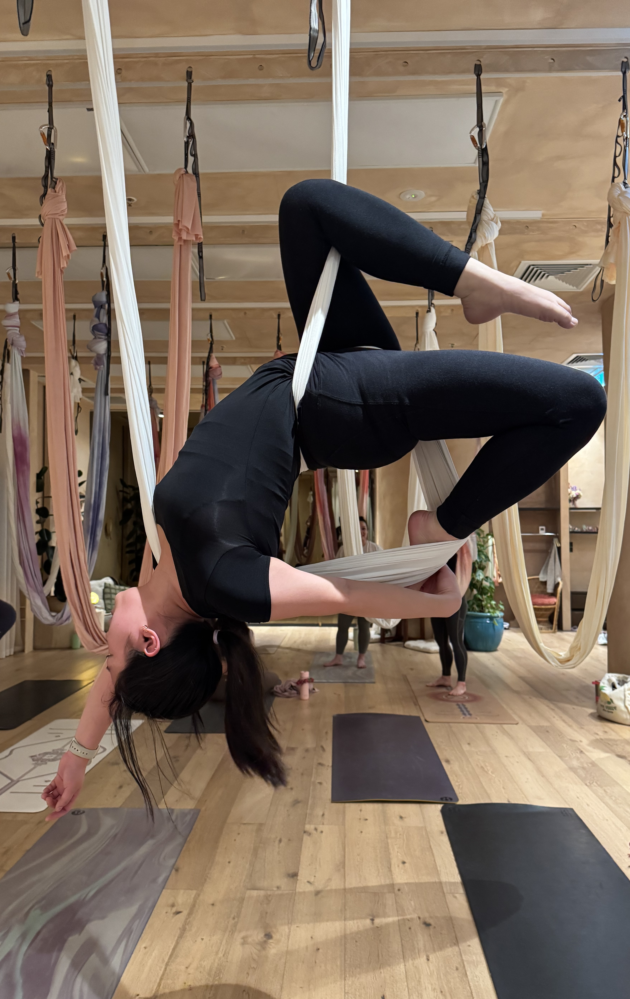
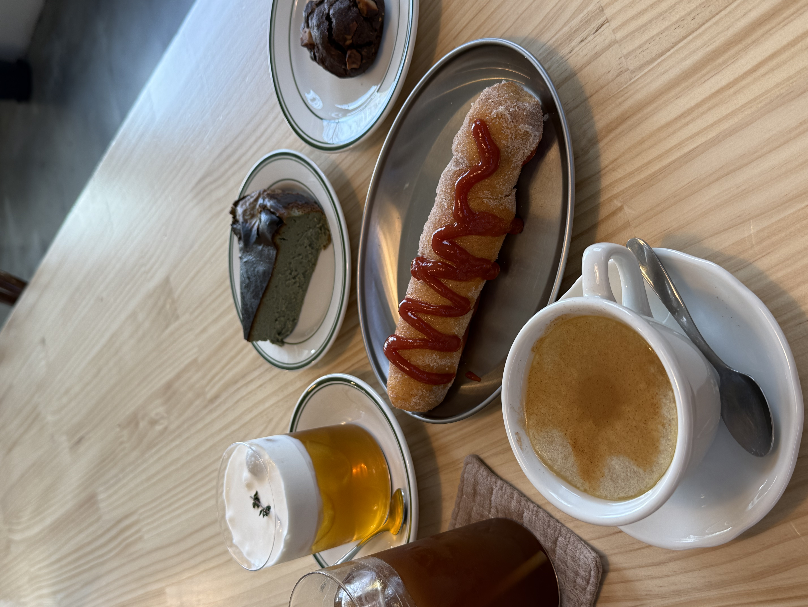
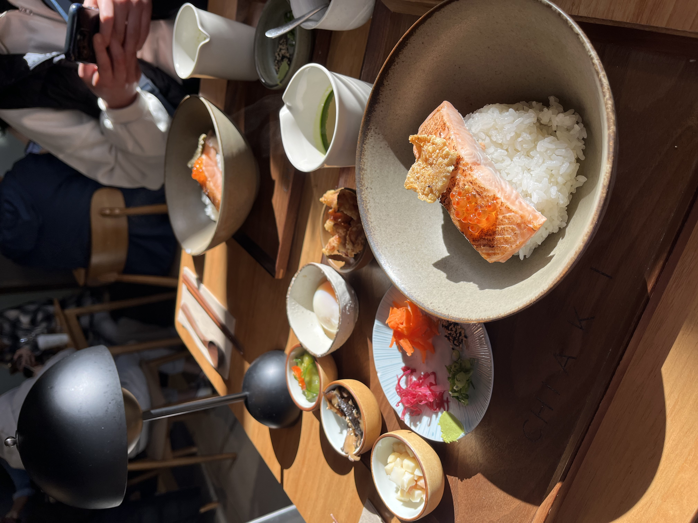
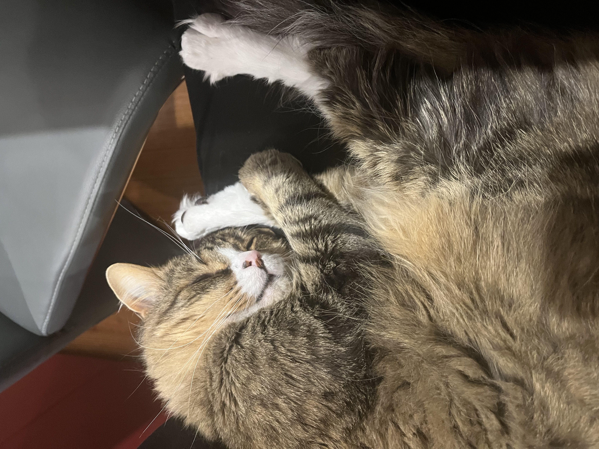
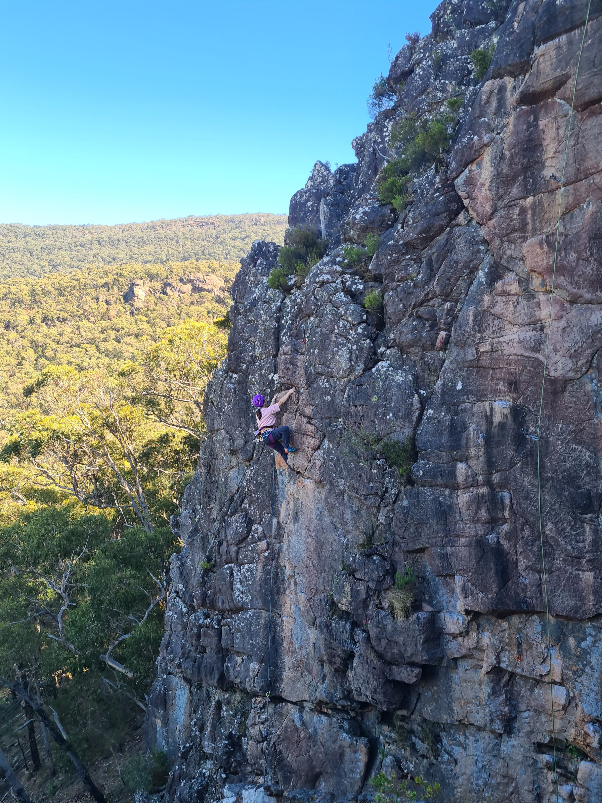
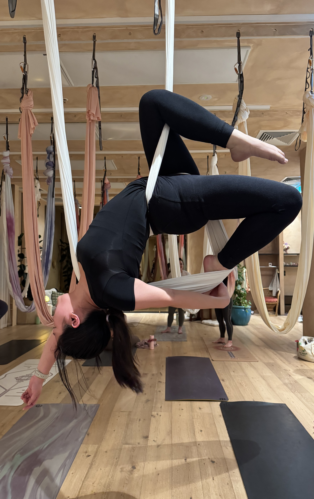
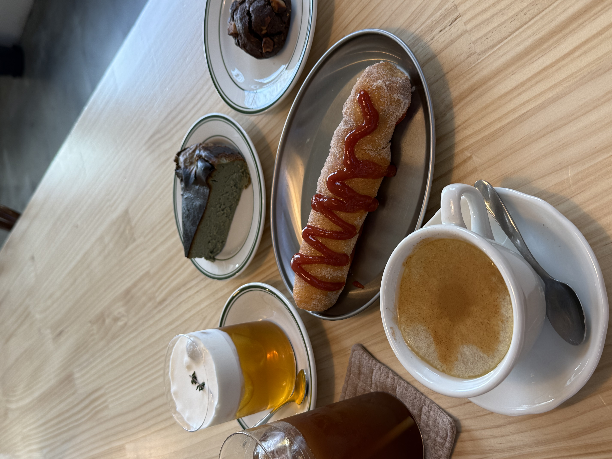
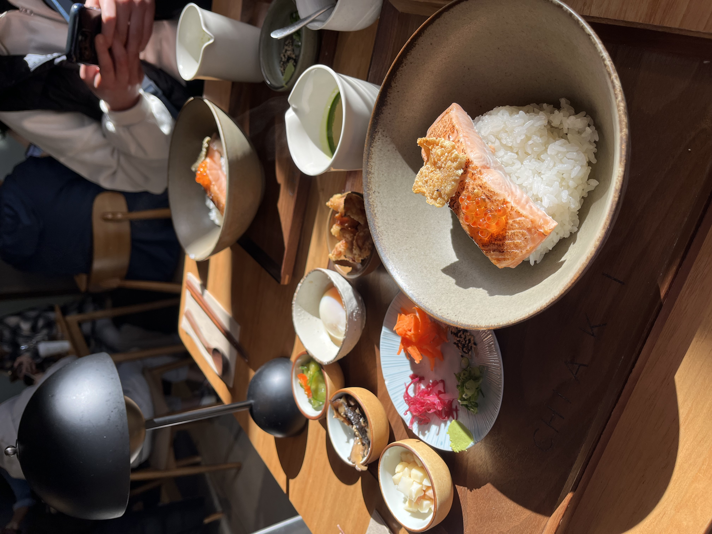
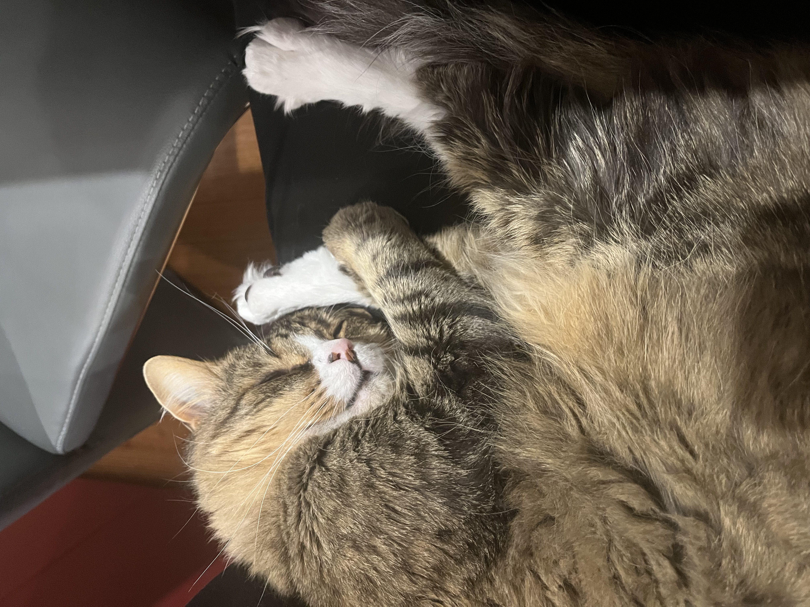
Academic Journey
🎓 Stops Along the Way
| Period | Location | Role |
|---|---|---|
| 2018–20 | Melbourne, Australia | Bachelor in Computing Studies, RMIT University |
| 2019 | Daejeon, South Korea | Semester Exchange at KAIST |
| 2021-2024 | Melbourne, Australia | Consultant - Cloud Advisory at IBM Consulting |
| 2024-2025 | Melbourne, Australia | Senior Associate - Program Excellence at Scyne Advisory |
| 2025–Now | Berlin, Germany | Master Student in Business Intelligence and Process Management, HWR Berlin |